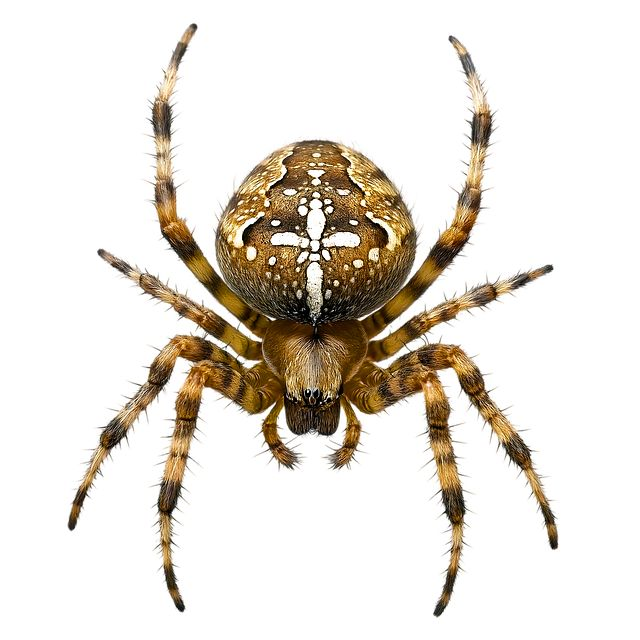

Descripción general
Las arañas son arácnidos pertenecientes a la clase Arachnida y al orden Araneae. Se encuentran presentes de forma común en viviendas familiares, galpones, depósitos, comercios y áreas verdes. Aunque en los ecosistemas naturales cumplen una función biológica valiosa como depredadoras de insectos, su ingreso y establecimiento dentro de las edificaciones genera alarma fundada, ya que determinadas especies poseen venenos de significación toxicológica y médica en nuestro país.
Especies frecuentes en Uruguay
Es primordial diferenciar entre aquellas especies inofensivas y las que presentan relevancia para la salud:
Loxosceles laeta (Araña de los cuadros, araña marrón o de rincón)
Especie de hábitos estrictamente domiciliarios, solitaria y nocturna. Mide entre 1 y 3 cm incluyendo sus patas, de color marrón parduzco y con una marca dorsal en el cefalotórax que asemeja un violín. Se refugia detrás de cuadros, respaldos de camas, roperos cerrados, zócalos, cajas apiladas y cortinajes.
Importancia médica: Es la especie de mayor atención sanitaria en Uruguay. Su mordedura, aunque poco frecuente y generalmente accidental al vestirse o acostarse, puede generar cuadros de loxoscelismo cutáneo con necrosis tisular.
Latrodectus mirabilis (Viuda negra o araña del lino)
Cuerpo globular de color negro lustroso con manchas de tono rojizo brillante en el abdomen. De hábitos exteriores, no suele habitar el interior de casas habitadas, prefiriendo ubicarse debajo de piedras, pilas de leña, escombros, pastizales secos y maquinarias agrícolas en desuso. Posee veneno neurotóxico.
Lycosa spp. (Arañas de jardín, lobo o corredoras)
Arañas de hábitos terrestres y tamaño mediano a grande. No construyen telas aéreas para cazar, sino que persiguen a sus presas en el suelo de jardines, terrenos baldíos y pastizales. Suelen excavar pequeñas cuevas o refugiarse bajo hojas secas; no revisten peligro médico importante.
Otras arañas domésticas y de jardín
Diversas especies como las arañas de patas largas de los techos (Pholcidae), que construyen telarañas irregulares en las esquinas altas de las habitaciones. Son inocuas para el ser humano y contribuyen a atrapar moscas y mosquitos, aunque su acumulación afecta la estética y limpieza de los ambientes.
Señales de presencia e infestación
- Aparición reiterada dentro de la vivienda: Detección de ejemplares desplazándose en paredes, baños o zócalos al encender la luz.
- Telas desordenadas detrás de muebles: La araña de los cuadros teje una tela algodonosa, densa y poco estructurada detrás de roperos, espejos y bibliotecas.
- Presencia de ootecas (sacos de huevos): Esferas de seda blanca fijadas en hendiduras o esquinas oscuras que contienen cientos de huevos.
- Refugios activos en patios y galpones: Telas en tubos o cuevas circulares a ras del suelo en jardines y zonas de escombros.
¿Por qué resulta difícil su control?
Al tener hábitos solitarios y no compartir alimento entre sí como las hormigas o cucarachas, los cebos geles no resultan efectivos contra las arañas. Además, caminan con sus patas elevando el cuerpo del suelo, lo que disminuye la superficie de absorción de insecticidas comunes.
La existencia de otros insectos en la casa (como polillas o cucarachas) les provee alimento ilimitado, facilitando su proliferación si no se realiza un manejo integral.
Plan de acción de FumiTotal
Inspección técnica de refugios
Revisión exhaustiva de traseras de mobiliario, cuadros, zócalos, aberturas, cielorrasos y sectores perimetrales exteriores.
Identificación de especies y foco
Determinamos si se trata de especies domiciliarias críticas (Loxosceles laeta) o variedades exteriores, verificando la presencia de sacos de reproducción.
Tratamiento técnico especializado
Aplicación dirigida con microemulsiones profesionales de alto poder de volteo y residualidad en grietas, cámaras de aire y perímetros estructurales.
Medidas preventivas y exclusión
Indicaciones concretas de ordenamiento, aspirado mecánico de sacos y sellado de burletes para impedir su reingreso desde el exterior.